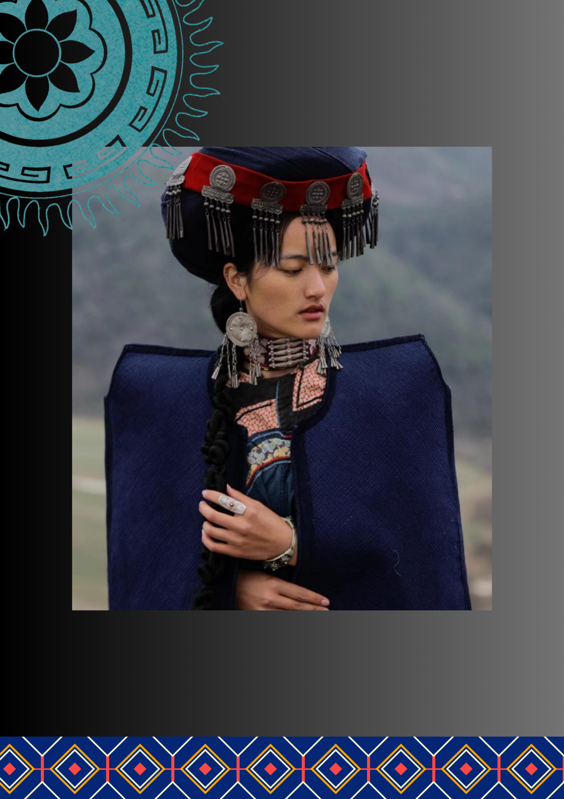
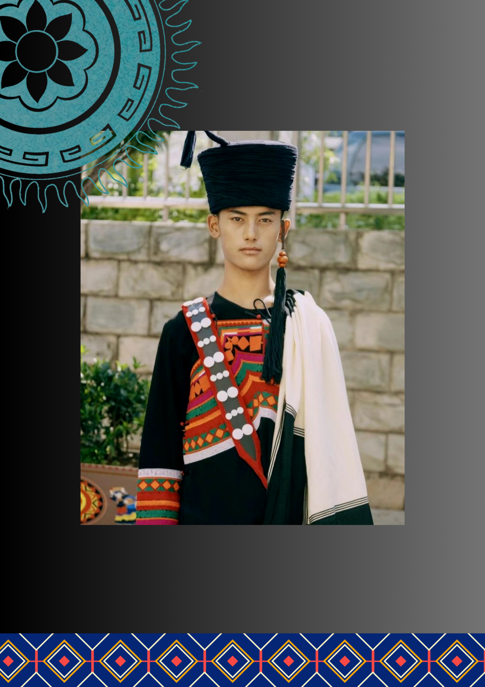

彝族服饰图鉴
彝族人民将文化和历史穿在身上，以世代相传的服装语言述说悠悠岁月
如今，让我们以数字化形式，以全新的视角共同欣赏和探索彝族服饰
开启恢弘如山，诗意如水的精神远行
相信每一道为「它」停留的目光和点击，都有意义
Get Started169
项非遗项目「黑色山鹰的斑斓羽衣」
彝族，被称为鹰背上烤太阳的民族，
在纵横八百里的大凉山里，孕育出苍劲、神秘的气质。
彝族人民保持着浓郁的服饰文化传统、独特的审美心理与文化习俗，
创造并保留了丰富多彩，绚丽多姿的彝族服饰艺术。
服饰或明艳或低沉，或精巧或粗犷，或灵动或端庄，展现迷人而神秘的东方美学。
非物质文化遗产名录
2014年，彝族服饰被列入第四批国家级非物质文化遗产名录。
三大方言区
形成了依诺、圣乍和所地三个次方言区

月亮的女儿—女性服饰概览
“彝人手巧，相传彝族姑娘兹莫领扎因为能在羊毛披毡上织出一个逼真的世界，于是被仙女接到月宫，成为月亮的女儿。自此，人们把彝族姑娘称作「月亮的女儿」。”
凉山彝族女性一般上身穿镶边或绣花的大襟右衽上衣，下穿百褶裙子或长裤。妇女有的也包黑色头帕，中年妇女头覆绣花的瓦式方帕，压以发辫，方帕前端遮住前额，有如帽沿。还喜戴银耳环，在领口别上银排花。
彝族少女15岁前，穿的是红白两色童裙，梳的是独辫，满15岁，有的地方就要举行一种叫“沙拉洛”的仪式，意即“换裙子、梳双辫、扯耳线”，标志着该少女已经长大成人，15岁以后，要穿中段是黑色的青年姑娘的拖地长裙，单辫梳成双辫，戴上绣满彩花的头帕，把童年时穿耳的旧线扯下换上银光闪闪的耳坠。

鹰的后代—男性服饰概览
“彝族少年一贯快马扬帆，道阻且长不转弯”
凉山彝族男性多穿黑色窄袖且镶有花边的右开襟上衣，下着多褶宽脚长裤。头顶留有约三寸长的头发一绺，汉语称为“天菩萨”，彝语称为“子尔”——表示人最高贵的地方，是附佑神居住之所，千万不能触摸。外面以长达数丈的青蓝布帕包头，在额前扎成细长锥形“子帖”（汉称“英雄结”），向前伸出帕外，以示英武。
青年男子的英雄结细如竹竿，长约20—30厘米；老年人的英雄结粗似螺髻，盘于额中。英雄结有偏左偏右之分，传说彝族先祖从滇、黔过往凉山时，曲涅系家支从左边渡金沙江，古候系家支从右边渡金沙江，故凡属曲涅系家支的后裔英雄结偏左，古候系后裔则偏右。